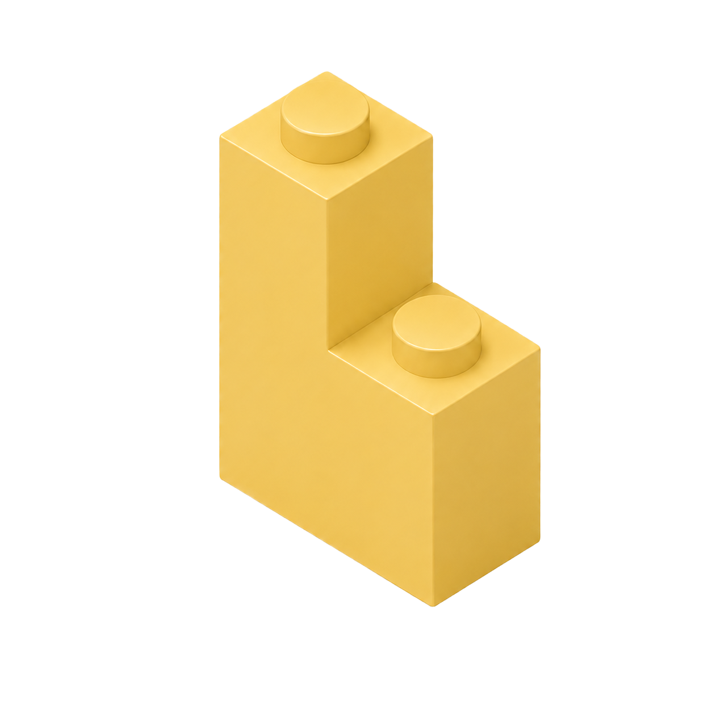

Briques
The kind only you would build. The little tool you'd actually use, every day.
Used to be hard
Code. Tools. Tutorials.
40-step setup wizards.
Every no-code thing built for teams.
Type what you want. A working mini app lands on your phone in about a minute. No code, no boilerplate, no tutorials.

Briques TGood evening
A weather log for fishing trips
One prompt in plain English. A working mini app, generated, rendered, ready to use.
Building
Almost ready · 38 sec
● Pro feature
Ask in plain English. Briques finds the rows that match the meaning. Per-app toggle, off by default.
Overcast · 16°C water · 6 caught
Drizzle · 14°C water · 4 caught
Cloudy · 17°C water · 5 caught
Tinkerer?
Pages, fields, actions: every piece of every mini app is editable. No code required, none rejected.
location
Short text
date
Calendar date
water_temp
Number
rating
Star rating
Not right yet?
Chat with Briques to refine. It re-shapes the app from your feedback. No need to start over.
Pages, tables, fields, actions: small honest pieces that snap together. You can see what you have, point at it, and change it.
View as tables. Reshape the schema on the fly. Add a field today, remove one tomorrow. Briques moves with you.
Kolad backwaters
Overcast · 24°C · 4 caught
Powai lake
Clear · 27°C · 6 caught
Bhandup pumping
Drizzle · 22°C · 1 caught
Vasai creek
Sunny · 26°C · 3 caught
Karnala dam
Cloudy · 21°C · 7 caught
Pen river bend
Mist · 19°C · 2 caught
Bhivpuri falls
Cloudy · 23°C · 5 caught
Tansa dam east
Sunny · 28°C · 9 caught
The little tool you've been meaning to build for months. Ship it tonight.
Free during beta · iOS + Android